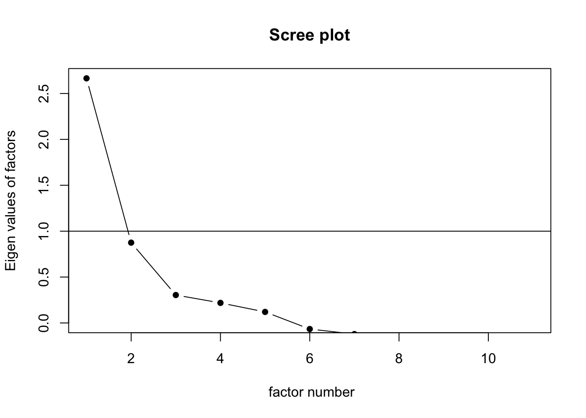
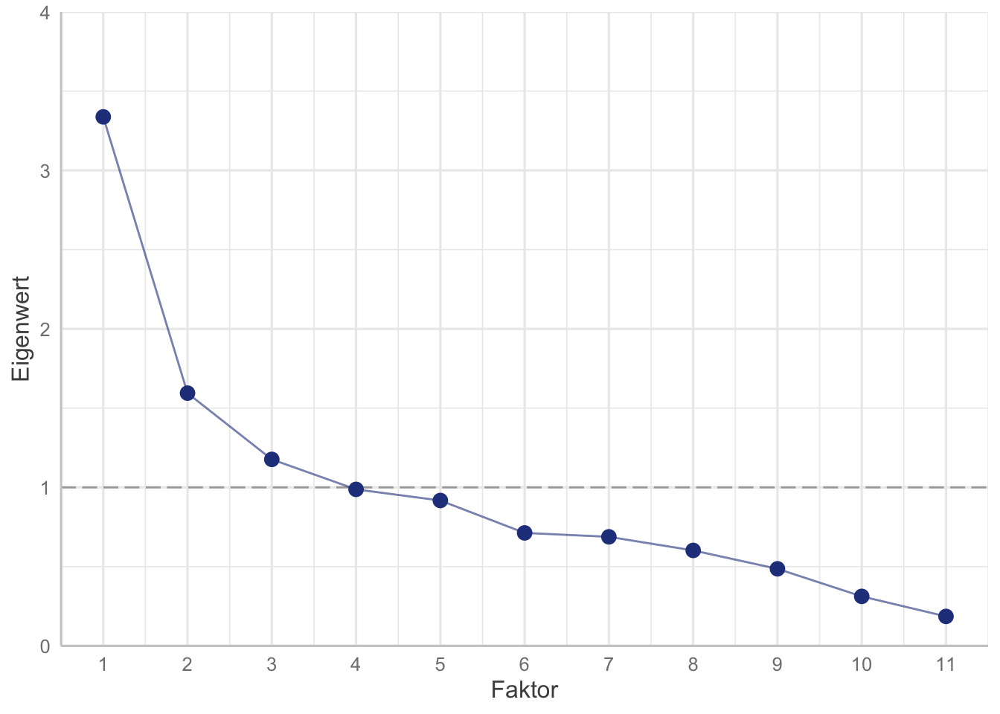
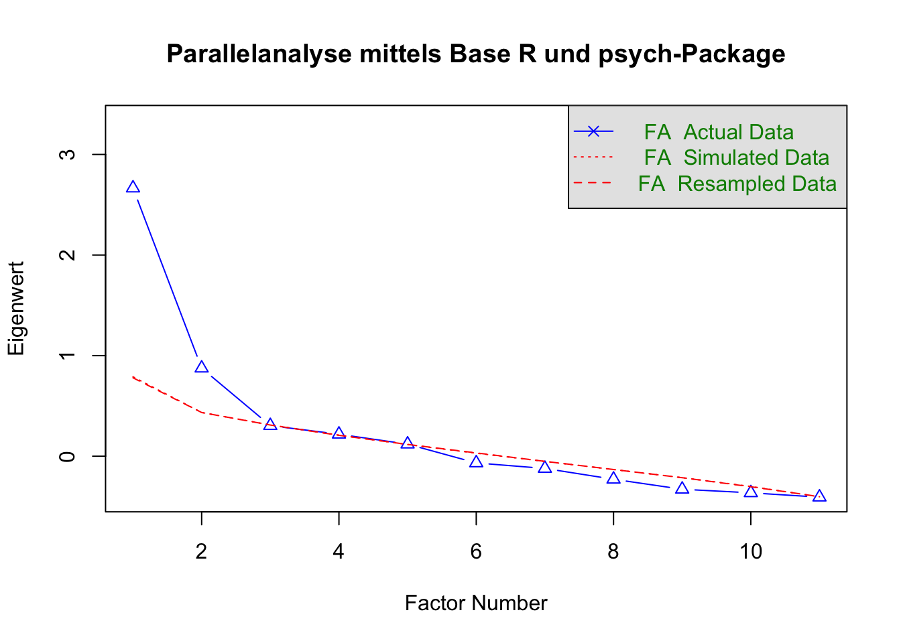
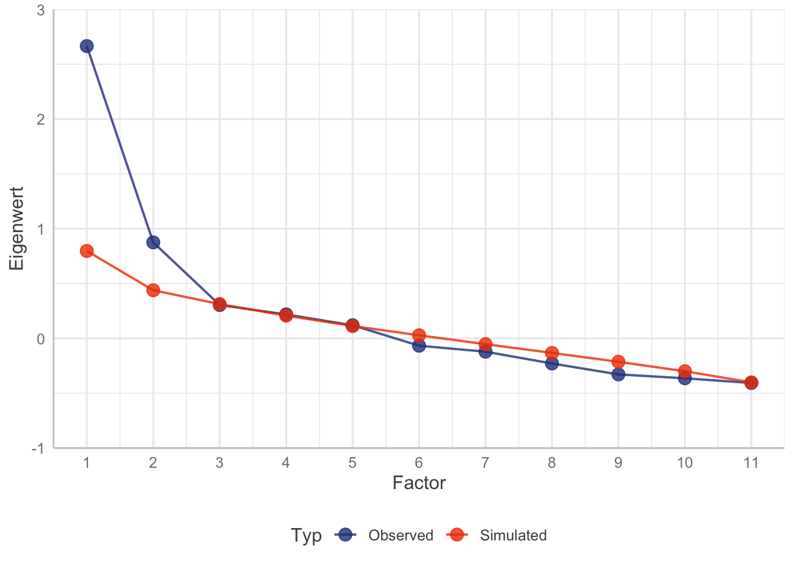
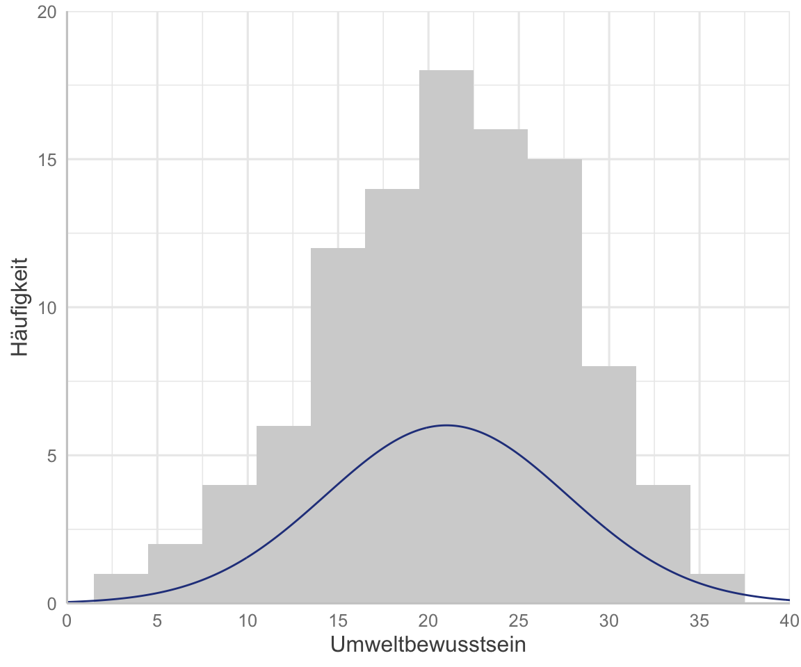
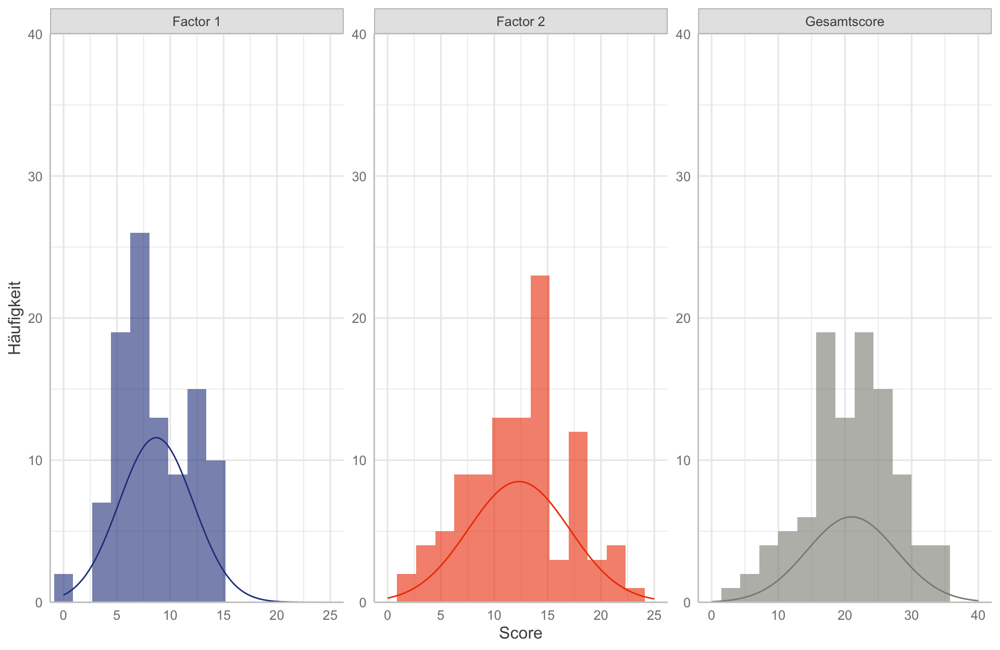

library(here)
data_item_final <- read.csv(here("data/processed/data_item_itemanalysis.csv"))2 EFA
Abstract
In dem Modul Grundlagen der Diagnostik (PsyBSc8) lernt ihr im Seminar ein psychologisches Testverfahren zu erstellen und empirisch zu überprüfen. In diesem Zusammenhang führen viele von euch wahrscheinlich das erste Mal eine Itemanalyse und eine Exploratorische Faktorenanalyse (EFA) durch. Hier könnt ihr noch einmal in aller Ruhe nachlesen, was euch im Praktikum schon einmal vorgeführt wurde.
2.1 Laden der Daten & Übersicht
Wir beginnen mit dem Datensatz, mit dem wir letztes Skript aufgehört haben. Wie immer müsst ihr dafür den Pfad wählen, in dem sich die Daten befinden. Ihr könnt die finalen Daten aus der Itemeanalyse entweder wieder aus OLAT herunterladen (unter Gemeinsame Dokumente aller Gruppen/R-Skripte_Auswertung) oder direkt den GitHub-Permalink nutzen.
link <- url("https://raw.githubusercontent.com/jlschnatz/PsyBSc8_Diagnostik_WS2324/main/data/processed/data_item_itemanalysis.csv")
data_item_final <- read.csv(link)Mit skim() können wir uns nochmal einen kurzen Überblick verschaffen, wie die Datenstruktur aussieht und welche Variablen wir nach der Itemanalyse beibehalten/ausgeschlossen haben.
library(skimr)
skim(data_item_final)| Name | data_item_final |
| Number of rows | 101 |
| Number of columns | 11 |
| _______________________ | |
| Column type frequency: | |
| numeric | 11 |
| ________________________ | |
| Group variables | None |
Variable type: numeric
| skim_variable | n_missing | complete_rate | mean | sd | p0 | p25 | p50 | p75 | p100 | hist |
|---|---|---|---|---|---|---|---|---|---|---|
| ub_06 | 0 | 1 | 2.69 | 1.62 | 0 | 1 | 3 | 4 | 5 | ▇▃▆▅▅ |
| ub_08 | 0 | 1 | 3.00 | 1.51 | 0 | 2 | 3 | 4 | 5 | ▆▆▆▇▆ |
| ub_09 | 0 | 1 | 1.45 | 1.28 | 0 | 1 | 1 | 2 | 5 | ▇▃▂▁▁ |
| ub_10 | 0 | 1 | 2.99 | 1.36 | 0 | 2 | 3 | 4 | 5 | ▃▇▇▇▅ |
| ub_13 | 0 | 1 | 3.66 | 1.28 | 0 | 3 | 4 | 5 | 5 | ▂▂▆▆▇ |
| ub_14_r | 0 | 1 | 2.95 | 1.40 | 0 | 2 | 3 | 4 | 5 | ▃▇▇▂▆ |
| ub_18 | 0 | 1 | 1.18 | 1.15 | 0 | 0 | 1 | 2 | 4 | ▇▇▃▂▁ |
| ub_19 | 0 | 1 | 2.19 | 1.47 | 0 | 1 | 2 | 3 | 5 | ▇▅▅▂▂ |
| ub_20 | 0 | 1 | 2.00 | 1.43 | 0 | 1 | 2 | 3 | 5 | ▇▆▃▁▂ |
| ub_24 | 0 | 1 | 3.78 | 0.93 | 0 | 3 | 4 | 4 | 5 | ▁▁▅▇▃ |
| ub_27_r | 0 | 1 | 3.73 | 1.19 | 0 | 3 | 4 | 5 | 5 | ▁▂▇▇▇ |
2.2 Recap der Itemanalyse
Als Erinnerung können wir uns nochmal die psychometrische Eigenschaften der beibehaltenen Items anschauen. Wir benutzen dafür wieder die Funktion tab_itemscale() aus dem sjPlot-Package, die wir letztes Skript kennengelernt haben.
library(sjPlot)
tab_itemscale(df = data_item_final, factor.groups.titles = "Finale Itemanalyse")| Row | Missings | Mean | SD | Skew | Item Difficulty | Item Discrimination | α if deleted | |
| ub_06 | 0.00 % | 2.69 | 1.62 | -0.11 | 0.54 | 0.41 | 0.74 | |
| ub_08 | 0.00 % | 3 | 1.51 | -0.43 | 0.60 | 0.36 | 0.75 | |
| ub_09 | 0.00 % | 1.45 | 1.28 | 0.96 | 0.29 | 0.35 | 0.75 | |
| ub_10 | 0.00 % | 2.99 | 1.36 | -0.35 | 0.60 | 0.38 | 0.74 | |
| ub_13 | 0.00 % | 3.66 | 1.28 | -0.88 | 0.73 | 0.35 | 0.75 | |
| ub_14_r | 0.00 % | 2.95 | 1.4 | 0.05 | 0.59 | 0.55 | 0.72 | |
| ub_18 | 0.00 % | 1.18 | 1.15 | 0.92 | 0.29 | 0.23 | 0.76 | |
| ub_19 | 0.00 % | 2.19 | 1.47 | 0.24 | 0.44 | 0.51 | 0.72 | |
| ub_20 | 0.00 % | 2 | 1.43 | 0.44 | 0.40 | 0.43 | 0.74 | |
| ub_24 | 0.00 % | 3.78 | 0.93 | -0.83 | 0.76 | 0.35 | 0.75 | |
| ub_27_r | 0.00 % | 3.73 | 1.19 | -0.99 | 0.75 | 0.56 | 0.72 | |
| Mean inter-item-correlation=0.222 · Cronbach's α=0.758 | ||||||||
2.3 Durchführung der EFA
2.3.1 Identifikation der Anzahl der Faktoren
Zur Bestimmung der Anzahl der Faktoren in der exploratorischen Faktorenanalyse gibt es mehrere Herangehensweisen, die bereits in dem Lernbar-Video vorgestellt wurden: das Eigenwertkriterium/Kaiser-Guttman-Kriterium [@kaiser1960application], der Scree-Plot [@cattell1966scree] und die Parallelanalyse [@horn1965rationale]. Jedes dieser Verfahren hat seine eigenen Vorbehalte hinsichtlich Konservativität und Objektivität. Deswegen ist es in der Praxis empfehlenswert, die Ergebnisse mehrerer Kriterien gleichzeitig zu berücksichtigen, um die höchste Genauigkeit zu erzielen. Für eine Übersicht hinsichtlich verschiedener Extraktionsmethoden und deren Vergleich siehe: @auerswald2019determine.
2.3.1.1 Möglichkeit I - Eigenwertkriterium
Das Eigenwertkriterium bzw. Kaiser-Kriterium ist das liberalste Maß der Entscheidung, weswegen tendeziell dadurch viele Faktoren entstehen. Zur Bestimmung werden die Eigenwerte errechnet und alle Faktoren beibehalten, deren Eigenwert \lambda >= 1 ist. Es gibt zwei Möglichkeiten, den Eigenwerteverlauf mittels R zu bestimmen.
Zunächst berechnen wir die symmetrische Korrelationsmatrix aus den Daten und können dann mit der eigen() Funktion die den Eigenwertverlauf bestimmen. Der Output ist eine Liste, in die wir indizieren müssen, um die Eigenwerte zu extrahieren.
# Base R
eigen(cor(data_item_final))$values [1] 3.3374011 1.5944637 1.1764625 0.9872941 0.9171743 0.7127462 0.6879672
[8] 0.6022027 0.4861623 0.3122628 0.1858631library(tidyverse)
# Alternative Schreibweise (mit pipes):
cor(data_item_final) %>%
eigen() %>%
chuck("values") # chuck() extrahiert einzelne Elemente aus Listen [1] 3.3374011 1.5944637 1.1764625 0.9872941 0.9171743 0.7127462 0.6879672
[8] 0.6022027 0.4861623 0.3122628 0.1858631# in Tabellenform:
cor(data_item_final) %>%
eigen() %>%
chuck("values") %>%
as_tibble() %>%
rename(Eigenvalue = value) %>%
tab_df(
title = "Eigenwertverlauf",
col.header = "Eigenwert",
show.rownames = TRUE
)| Row | Eigenwert |
| 1 | 3.34 |
| 2 | 1.59 |
| 3 | 1.18 |
| 4 | 0.99 |
| 5 | 0.92 |
| 6 | 0.71 |
| 7 | 0.69 |
| 8 | 0.60 |
| 9 | 0.49 |
| 10 | 0.31 |
| 11 | 0.19 |
Mit dem alternativen Weg könnnen wir noch etwas mehr Informationen als nur die Eigenwerte extrahieren. Dazu müssen wir das FactoMineR Package laden bzw. wenn noch nicht geschehen auch installieren. Wir verwenden die PCA() Funktion und extrahieren im Anschluss die Eigenwerte und Varianzaufklärung der möglichen Faktoren aus der abgespeichertern Liste.
# install.packages("FactoMineR")
library(FactoMineR)
pca <- PCA(data_item_final, graph = FALSE)
eigen <- as.data.frame(pca$eig) # als dataframe abspeichern
eigen <- as.data.frame(pca[["eig"]]) # Alternative
# in Tabellenform:
tab_df(
x = eigen,
show.rownames = TRUE,
title = "Eigenwertverlauf mit zusätzlicher Information hinsichtlich erklärte Varianz",
col.header = c("Eigenwert", "Erklärte Varianz", "Kum. erklärte Varianz")
) | Row | Eigenwert | Erklärte Varianz | Kum. erklärte Varianz |
| comp 1 | 3.34 | 30.34 | 30.34 |
| comp 2 | 1.59 | 14.50 | 44.84 |
| comp 3 | 1.18 | 10.70 | 55.53 |
| comp 4 | 0.99 | 8.98 | 64.51 |
| comp 5 | 0.92 | 8.34 | 72.84 |
| comp 6 | 0.71 | 6.48 | 79.32 |
| comp 7 | 0.69 | 6.25 | 85.58 |
| comp 8 | 0.60 | 5.47 | 91.05 |
| comp 9 | 0.49 | 4.42 | 95.47 |
| comp 10 | 0.31 | 2.84 | 98.31 |
| comp 11 | 0.19 | 1.69 | 100.00 |
Wie anhand der Ergebnisse erkennbar ist, wird durch das Eigenwertkriterium ein Modell mit 3 Faktoren vorgeschlagen.
2.3.1.2 Möglichkeit II - Scree-Plot
Der Scree-Plot ist ein visuell deskriptives Kriterium zur Entscheidung der Faktoren. Dabei ist das Kriterium konservativer als das Eigenwertkriterium. Wie in dem Lernbar-Video beschrieben wird der optische Knick herangezogen, um die Entscheidung über die Faktorenanzahl zu treffen. Alle Faktoren, die sich “über” dem Knick befinden, werden beibehalten.
Welches Package fürs Plotting?
Um in R einen Scree-Plot zu generieren, könnnen wir entweder die Base-R Plotting Funktionen verwenden oder das sehr erfolgreiche ggplot2-Package der tidyverse Familie benutzen. Dabei können zwar mit Base R Plotting Funktionen zwar in nur wenigen Zeilen ein Plot erstellt werden, bieten dafür aber nicht so viele Anpassungsmöglichkeiten und folgen keiner klaren Struktur im Vergleich zu ggplot2. Wem es also wichtig sein sollte, schöne Plots zu generieren, sollte eher das ggplot2-Package nutzen. Wer nochmal eine ggplot2 Auffrischung brauchen sollte, findet hier ein paar nützliche Links: PandaR, R for Data Science & ggplot2-Buch.
Wir benutzen das psych Package, um den Scree-Plot zu erstellen. Dabei verwendet dieses Package im Hintergrund Base R für das Plotting.
library(psych)
scree(
rx = data_item_final,
factors = TRUE,
pc = FALSE, # sollen Hauptkomponenten auch dargestellt werden?
hline = 1 # Plot mit Knicklinie, hline = -1 -> ohne Linie
) 
Wir erstellen zunächst einen Dataframe, indem die Eigenwerte und Nummerierung der Faktoren als zwei Variablen gespeichert sind. Danach werden diese Daten in Layern mittels ggplot2 geplottet.
eigen_res <- eigen(cor(data_item_final))
data_eigen <- data.frame(
Eigenwert = eigen_res$values,
Faktor = seq_along(eigen_res$values) # alternativ 1:length(eigen_res$values)
)
# Basis-ggplot Layer
ggplot(
data = data_eigen,
mapping = aes(x = Faktor, y = Eigenwert) # Zuordnung von Variablen zu Koordinatenachsen
) +
# Horizontale Linie bei y = 1
geom_hline(
color = "darkgrey",
yintercept = 1,
linetype = "longdash"
) +
# Hinzufügen der Linien
geom_line(alpha = 0.6, color = "royalblue4") +
# Hinzufügen der Punkte
geom_point(size = 3, color = "royalblue4") +
# Achsenveränderung der y-Achse
scale_y_continuous(
breaks = seq(0, 4, 1),
limits = c(0, 4),
expand = c(0, 0)
) +
# Achsenveränderung der x-Achse
scale_x_continuous(
breaks = seq(1, 11),
limits = c(1, 11)
) +
# Theme
theme_sjplot() 
Die Ergebnisse des Scree-Plots sind in diesem Fall nicht ganz eindeutig interpretierbar, da kein klarer Knick im Verlauf erkennbar ist. Hier wird auch ein Nachteil dieser Methode deutlich: die visuelle Interpretation bleibt immer bis zu einem gewissen Grad subjektiv. Am ehesten scheint ein Modell mit zwei Faktoren gemäß dem Scree-Plot am sinnvollsten. Daher wäre die Entscheidung gemäß dem Scree-Plot im Vergleich zum Kaiser-Kriterium konservativer.
2.3.1.3 Möglichkeit III - Parallelanalyse
Die letzte vorgestellte Möglichkeit ist die Parallelanalyse. Dabei werden die Eigenwerte der Faktorenanalyse des realen Datensatzes mit denen eines Datensatzes mit normalverteilten unkorrelierten Zufallsdaten verglichen, wobei Faktoren beibehalten werden, deren Eigenwerte größer sind als die gemittelten Eigenwerte der Zufallsdaten [@Klopp_2010]. Anders formuliert werden Faktoren beibehalten, die mehr Varianz aufklären als rein zufällig simulierte Daten. Von den drei vorgestellten Kriterien ist diese das konservativste Kriterium.
psych::fa.parallel(
x = data_item_final,
fm = "pa", # Principal Axis Factoring Extraktion
fa = "fa", # Factor Analysis (fa = "pc" für Hauptkomponentenanalyse)
n.iter = 1000, # Anzahl der Simulationen
quant = .95, # Vergleichsintervall
main = "Parallelanalyse mittels Base R und psych-Package",
ylabel = "Eigenwert",
error.bars = FALSE # TRUE für Error-Bars
)
Parallel analysis suggests that the number of factors = 2 and the number of components = NA Wir speichern zunächst die ausgegeben Daten der Funktion fa.parallel() in einem Objekt ab. Danach erstellen wir einen Dateframe mit den relevanten Informationen (empirische und simulierte Eigenwerte).
data_pa <- fa.parallel(
x = data_item_final,
fm= "pa",
fa = "fa",
plot = FALSE,
n.iter = 1000,
quant = .95
)Parallel analysis suggests that the number of factors = 2 and the number of components = NA # Dataframe
data_plot <- data.frame(
Observed = data_pa$fa.values, # empirisch
Simulated = data_pa$fa.sim # simuliert
)
# Zeilennamen als eigene Variable "Factor"
data_plot$Factor <- as.integer(rownames(data_plot))
tab_df(data_plot)| Observed | Simulated | Factor |
| 2.67 | 0.80 | 1 |
| 0.88 | 0.44 | 2 |
| 0.30 | 0.31 | 3 |
| 0.22 | 0.21 | 4 |
| 0.12 | 0.11 | 5 |
| -0.07 | 0.03 | 6 |
| -0.12 | -0.05 | 7 |
| -0.23 | -0.13 | 8 |
| -0.33 | -0.21 | 9 |
| -0.36 | -0.30 | 10 |
| -0.41 | -0.40 | 11 |
Um Daten mit ggplot2 zu visualisieren, müssen sie im Long-Format vorliegen. In diesem Kontext bedeutet das, dass jede Beobachtung durch drei Variablen repräsentiert wird: eine für den Faktor, eine zur Kennzeichnung, ob der Datenpunkt simuliert oder empirisch ist, und eine für die Eigenwerte.
Die praktische Funktion pivot_longer() aus dem tidyr-Package ermöglicht die Transformation von Dataframes vom Wide-Format ins Long-Format (analog dazu kann pivot_wider() von Wide zu Long genutzt werden). Dabei können wir mit dem cols-Argument die zu transformierenden Variablen spezifizieren, und mit names_to und values_to geben wir den neu erstellten Variablen eigene Namen.
data_plot_long <- pivot_longer(
data = data_plot,
cols = c(Observed, Simulated),
names_to = "Typ",
values_to = "Eigenwert"
)
tab_df(data_plot_long)| Factor | Typ | Eigenwert |
| 1 | Observed | 2.67 |
| 1 | Simulated | 0.80 |
| 2 | Observed | 0.88 |
| 2 | Simulated | 0.44 |
| 3 | Observed | 0.30 |
| 3 | Simulated | 0.31 |
| 4 | Observed | 0.22 |
| 4 | Simulated | 0.21 |
| 5 | Observed | 0.12 |
| 5 | Simulated | 0.11 |
| 6 | Observed | -0.07 |
| 6 | Simulated | 0.03 |
| 7 | Observed | -0.12 |
| 7 | Simulated | -0.05 |
| 8 | Observed | -0.23 |
| 8 | Simulated | -0.13 |
| 9 | Observed | -0.33 |
| 9 | Simulated | -0.21 |
| 10 | Observed | -0.36 |
| 10 | Simulated | -0.30 |
| 11 | Observed | -0.41 |
| 11 | Simulated | -0.40 |
Eine alternative Methode, die ausschließlich auf base-R basiert, wird hier beschrieben.
data_plot_long <- reshape(
data = data_plot,
varying = c("Observed", "Simulated"),
v.names = "Eigenwert",
timevar = "Typ",
times = c("Observed", "Simulated"),
direction = "long"
)Jetzt können wir die Abbildung mit ggplot2 generieren. Dabei definieren wir neben x und y mit aes(color = Typ), dass diese Variable als Farbkodierung dargestellt werden soll.
ggplot(
# Daten
data = data_plot_long,
# Aesthetics
aes(x = Factor, y = Eigenwert, color = Typ)
) +
# Linien
geom_line(
size = 0.7,
alpha = .8
) +
# Punkte
geom_point(
size = 3.5,
alpha = .8
) +
# Achsenveränderungen
scale_y_continuous(
breaks = seq(-1, 3, 1),
limits = c(-1, 3),
expand = c(0, 0)
) +
scale_x_continuous(
breaks = seq(1, 11),
limits = c(1, 11)
) +
# Farben verändern
scale_color_manual(values = c("royalblue4", "orangered2")) +
# Themes
theme_sjplot() +
theme(legend.position = "bottom")
Die Ergebnisse der Parallelanalyse suggerieren ein Modell mit zwei Faktoren. Da dies das konservativste Vorgehen ist, entscheiden wir uns für ein zweifaktorielle Modell für die weitere Analyse.
2.3.2 Extraktion der Faktoren & Rotation
Als nächsten Schritt können wir nun die eigentliche exploratorische Faktoranalyse durchführen. Wir benutzen dafür wieder ein Befehl aus dem sjPlot-Package, mit dem wir direkt die Faktorstruktur als Tabelle darstellen können. Es gibt aber auch viele alternative Packages, mit denen eine EFA durchgeführt werden kann (z.B. psych fa() , mit dem parameters-Paket factor_analysis() oder base-R factanal()).
Wir spezifizieren ein Modell mit 2 Faktoren, die mittels Principal Axis Factoring extrahiert werden (method = "pa") und führen anschließend eine oblimine Rotation durch (rotation = "oblimin"). Wie in der Lernbar bereits vorgestellt, gibt es unterschiedliche Rotationsverfahren nach der Extraktion der Faktoren. Bei orthogonalen Rotation bleiben die latenten Faktoren unkorreliert, wohingegen bei obliquer Rotation die Faktoren miteinander korrelieren dürfen. Alle Rotationsverfahren haben das Ziel, möglichst eine Einfachstruktur zu erhalten, d.h. dass jedes Item möglichst nur auf einen Faktor lädt. Für einen Vergleich verschiedener Rotationsverfahren und wann welches angewendet werden sollte: @costello2005best.
fit_fa <- tab_fa(
data = data_item_final,
nmbr.fctr = 2, # Faktorenanzahl
rotation = "oblimin", # Rotationsverfahren
fctr.load.tlrn = 0,
method = "pa", # Alternative Methoden aus Lernbar, "ml" für Maximum-Likelihood
title = "Faktorenanalyse",
#file = "fit_fa.doc" # Ergebnisse können wieder als .doc gespeichert werden
)
fit_fa| Factor 1 | Factor 2 | |
| ub_06 | -0.07 | 0.69 |
| ub_08 | 0.01 | 0.47 |
| ub_09 | -0.09 | 0.59 |
| ub_10 | 0.13 | 0.37 |
| ub_13 | 0.26 | 0.21 |
| ub_14_r | 0.99 | -0.04 |
| ub_18 | 0.14 | 0.16 |
| ub_19 | 0.19 | 0.54 |
| ub_20 | 0.73 | -0.03 |
| ub_24 | 0.20 | 0.29 |
| ub_27_r | 0.62 | 0.24 |
| Cronbach's α | 0.76 | 0.67 |
Der Output besteht erneut aus einer HTML-Tabelle, die die Ladungen der 11 Items auf beide Faktoren sowie die Reliabilität der beiden Skalen anzeigt. Die jeweils höhere Ladung ist dabei hervorgehoben. Wir erinnern uns daran, dass bei der EFA es zwei Selektionskriterien zur Ermittlung der bestmöglichen Einfachstruktur gibt: hohe Faktorladungen (Auschluss von Item \lambda < .3 bzw. konservativer \lambda < .4) und Ausschluss von Items mit Doppelladungen (Cutoff z.B. bei \mid~ \lambda_1 - \lambda_2 \mid < .1). Um erneut programmatisch die Items zu ermitteln, die anhand dieser Cutoff-Kriterium ausgeschlossen werden sollten, führen wir nochmal die Faktorenanalyse mit dem psych-Paket durch. Der Grund dafür liegt darin, dass das psych-Paket als Output der Funktion die Faktorladungen ausgibt, auf die wir mithilfe der loadings() Funktion zugreifen können. Danach können wir mit ein bisschen Logik mit der Funktion filter() aus dem dplyr-Paket alle Items filtern, die ausgeschlossen werden sollten.
res_psych <- psych::fa(
r = data_item_final,
nfactors = 2, # 2 Faktoren
fm = "pa" # Principal Axis Factoring
)
df_fa <- as.data.frame.matrix(loadings(res_psych))
df_fa$id_item <- rownames(df_fa) # Neue Variable mit den Itemnamen
step_kick3_efa <- df_fa %>%
filter(
# 1. Kriterium
(PA1 < .3 & PA2 < .3) # Ladungen sowohl beim ersten als auch zweiten Faktor <.3
| # ODER
# 2. Kriterium
(abs(PA1 - PA2) < .1) # Absolute Differenz beider Faktoren < .1
) %>%
pull(id_item)2.3.3 Finale Modellspezifizierung
Die Faktorladungen von Item 13, Item 18 und Item 24 liegen unterhalb des festgelegten Cut-off-Kriteriums und wurden daher von der Filterfunktion als ausschlusswürdig identifiziert. Alle anderen Items laden weitestgehend gut auf einen Faktor und besitzen mittlere bis sehr hohe Faktorladungen. Für eine abschließende Modellspezifizierung erstellen wir einen neuen Datensatz ohne die drei genannten Variablen und führen erneut eine Faktorenanalyse durch.
data_item_final_s3_efa <- select(data_item_final, -all_of(step_kick3_efa))
tab_fa(
data = data_item_final_s3_efa,
nmbr.fctr = 2,
rotation = "oblimin",
fctr.load.tlrn = 0,
method = "pa",
title = "Finale Faktorenanalyse"
)| Factor 1 | Factor 2 | |
| ub_06 | -0.05 | 0.72 |
| ub_08 | 0.02 | 0.45 |
| ub_09 | -0.07 | 0.61 |
| ub_10 | 0.13 | 0.33 |
| ub_14_r | 0.99 | -0.04 |
| ub_19 | 0.21 | 0.52 |
| ub_20 | 0.74 | -0.03 |
| ub_27_r | 0.64 | 0.23 |
| Cronbach's α | 0.83 | 0.67 |
2.4 Deskriptive Analyse der Faktorstruktur
Anschließend können wir für jeden Faktor getrennt eine finale Itemanalyse durchführen. Das sjPlot Paket kann dabei alle zwei Tabellen für die Faktoren gleichzeitig in einer Funktion berechnen. Dafür muss zunächst jedoch ein Index erstellt werden, der spezifiziert, welche Items zu welchem Faktor gehören. Danach kann durch das Argument factor.groups die Faktorstruktur spezifiziert werden.
fa_index <- tab_fa(
data = data_item_final_s3_efa,
nmbr.fctr = 2,
rotation = "oblimin",
fctr.load.tlrn = 0,
method = "pa"
)$factor.index
print(fa_index) ub_06 ub_08 ub_09 ub_10 ub_14_r ub_19 ub_20 ub_27_r
2 2 2 2 1 2 1 1 tab_itemscale(
df = data_item_final_s3_efa,
factor.groups = fa_index,
factor.groups.titles = c("Faktor 1", "Faktor 2")
)| Row | Missings | Mean | SD | Skew | Item Difficulty | Item Discrimination | α if deleted | |
| ub_14_r | 0.00 % | 2.95 | 1.4 | 0.05 | 0.59 | 0.80 | 0.65 | |
| ub_20 | 0.00 % | 2 | 1.43 | 0.44 | 0.40 | 0.68 | 0.79 | |
| ub_27_r | 0.00 % | 3.73 | 1.19 | -0.99 | 0.75 | 0.62 | 0.84 | |
| Mean inter-item-correlation=0.626 · Cronbach's α=0.834 | ||||||||
| Row | Missings | Mean | SD | Skew | Item Difficulty | Item Discrimination | α if deleted | |
| ub_06 | 0.00 % | 2.69 | 1.62 | -0.11 | 0.54 | 0.52 | 0.57 | |
| ub_08 | 0.00 % | 3 | 1.51 | -0.43 | 0.60 | 0.40 | 0.63 | |
| ub_09 | 0.00 % | 1.45 | 1.28 | 0.96 | 0.29 | 0.47 | 0.60 | |
| ub_10 | 0.00 % | 2.99 | 1.36 | -0.35 | 0.60 | 0.30 | 0.67 | |
| ub_19 | 0.00 % | 2.19 | 1.47 | 0.24 | 0.44 | 0.44 | 0.61 | |
| Mean inter-item-correlation=0.288 · Cronbach's α=0.670 | ||||||||
| Component 1 | Component 2 | |
| Component 1 | α=0.834 | |
| Component 2 | 0.313 (.001) |
α=0.670 |
| Computed correlation used pearson-method with listwise-deletion. | ||
Ebenfalls sollte zusätzlich zur internen Konsistenz Cronbach´s \alpha auch McDonald´s \omega für jede Skala berechnet werden. Dafür erstellen wir zwei Variablen, die die Itemnamen für die beiden Skalen enthalten. Nun können wir eine kleine Funktion erstellen, mit der wir immer wieder für einen Datensatz \alpha und \omega berechnen können. Wir sparen uns somit die Arbeit, jedes Mal wieder den Code zu wiederholen, welcher im Body (hinter der eckigen Klammern) der Funktion steht. Wichtig ist, dass wir mit der return() angeben, was letztendlich dem User ausgegeben werden soll (sonst wird nichts angezeigt).
f1_names <- names(fa_index[fa_index == 1])
f2_names <- names(fa_index[fa_index == 2])
get_reliability <- function(.data, .var_names) {
fit_omega <- omega(.data[, .var_names], plot = FALSE)
out <- list(
omega = fit_omega$omega.tot,
alpha = fit_omega$alpha
)
# Angabe, welche Objekte ausgegeben werden sollen
return(out)
}
get_reliability(data_item_final_s3_efa, f1_names)$omega
[1] 0.8538191
$alpha
[1] 0.8341717get_reliability(data_item_final_s3_efa, f2_names)$omega
[1] 0.7115663
$alpha
[1] 0.66900352.5 Testwertanalyse
Als letztes werden wir die deskriptiven Kennwerte der Testwerte der drei Skalen genauer betrachten. Diese müssen wir zunächst erstmal berechnen. Dafür gibt es mehrere Möglichkeiten:
data_item_final_scores <- data_item_final_s3_efa
data_item_final_scores$f1 <- rowSums(data_item_final_scores[, f1_names])
data_item_final_scores$f2 <- rowSums(data_item_final_scores[, f2_names])
data_item_final_scores$ub_score <- rowSums(data_item_final_scores)
colnames(data_item_final_scores) [1] "ub_06" "ub_08" "ub_09" "ub_10" "ub_14_r" "ub_19"
[7] "ub_20" "ub_27_r" "f1" "f2" "ub_score"Über die Funktion rowwise() wird angegeben, dass die nachfolgenden Operationen über die Zeilen (und nicht über die Spalten wie üblich) hinweg stattfinden sollen. Die Items, die aufsummiert werden, können über die Funktion c_across(variablen) angegeben werden.
data_item_final_scores <- data_item_final_s3_efa %>%
rowwise() %>%
mutate(ub_score = sum(c_across(everything()))) %>%
mutate(
f1 = sum(c_across(all_of(f1_names))),
f2 = sum(c_across(all_of(f2_names)))
)
colnames(data_item_final_scores) [1] "ub_06" "ub_08" "ub_09" "ub_10" "ub_14_r" "ub_19"
[7] "ub_20" "ub_27_r" "ub_score" "f1" "f2" Wir können uns mittels der describe() des psych-Pakets, welche bereits im letzten Skript vorgestellt wurde die wichtigsten deskriptiven Kennwerte ausgeben lassen.
tab_df(describe(data_item_final_scores$f1))| vars | n | mean | sd | median | trimmed | mad | min | max | range | skew | kurtosis | se |
| 1 | 101 | 8.68 | 3.50 | 8 | 8.63 | 2.97 | 0 | 15 | 15 | 0.12 | -0.53 | 0.35 |
tab_df(describe(data_item_final_scores$f2))| vars | n | mean | sd | median | trimmed | mad | min | max | range | skew | kurtosis | se |
| 1 | 101 | 12.32 | 4.77 | 13 | 12.40 | 4.45 | 1 | 24 | 23 | -0.15 | -0.31 | 0.47 |
Diese deskriptiven Kennwerte können wir zudem abschließend in einem Histogramm mit unterlegter Normalverteilung visualisieren. Wir benutzen für das Plotten der Normalverteilung das Package ggh4x mit der Funktion stat_theodensity(). Das praktische hierbei ist, dass wir nicht aktiv die Parameter der Normalverteilung (M und SD) angeben müssen, sondern die Funktion das für uns im Hintergrund auf Basis der Daten berechnet. Im nachfolgenden Beispiel wird der Plot für den Gesamttestwert (alle Items) berechnet. Wenn eine der 3 Skalen geplottet werden soll, muss dies nur in der ggplot() Funktion angegeben werden (s.h. Code).
library(ggh4x)
ggplot(data_item_final_scores, aes(x = ub_score)) + # oder x = f1/f2
geom_histogram(
binwidth = 3,
fill = "lightgrey",
) +
stat_theodensity(
mapping = aes(y = after_stat(count)),
distri = "norm",
color = "royalblue4",
size = 0.5
) +
scale_x_continuous(
name = "Umweltbewusstsein",
limits = c(0, 40), # Achsenlimit
breaks = seq(0, 40, 5), # Achsenabschnitte
expand = c(0, 0)
) +
scale_y_continuous(
name = "Häufigkeit",
limits = c(0, 20),
breaks = seq(0, 20, 5),
expand = c(0, 0)
) +
theme_sjplot()
Für diejenigen unter euch, die sich in etwas anspruchvolleres R bzw. ggplot2 Territorium wagen wollen: Es gibt auch die Möglichkeit, alle Skalen gleichzeitig in einer Abbildung darzustellen. Um jeden einzelnen Schritt der großen Pipe zu verstehen, geht am besten jeden einzelnen Layer durch und schaut, wie sich der Plot verändert. Auch kann es hilfreich sein, wenn man die einzelnen Parameter in den Layern verändert, um zu schauen, was diese bewirken. Es reicht allerdings natürlich auch völlig aus, wenn ihr euch an dem letzten Plot orientiert!
Show the code
library(ggh4x)
library(jcolors)
strip_labels <- as_labeller(c(f1 = "Factor 1", f2 = "Factor 2", ub_score = "Gesamtscore"))
data_item_final_scores %>%
# Variablen auswählen, die benötigt werden
select(f1, f2, ub_score) %>%
# Vom Wide ins Long-Format
pivot_longer(
cols = everything(),
names_to = "factor",
values_to = "score"
) %>%
# ggplot Base Layer
ggplot(aes(x = score, fill = factor)) +
# facet_wrap erstellt kleineres Plotting Fenster anhand einer Variable
facet_wrap(
facets = vars(factor), # Variable, welche gefacetted werden soll
labeller = strip_labels, # Facet Labels
scales = "free" # freies Koordinatensystem
) +
# Histogramm
geom_histogram(
bins = 15,
alpha = 0.6,
show.legend = FALSE,
aes(fill = factor)
) +
# Theoretische Normalverteilung
stat_theodensity(aes(y = after_stat(count), color = factor)) +
# Achsenmanipulation in den einzelnen Facets
facetted_pos_scales(
x = list(
factor == "f1" ~ scale_x_continuous(limits = c(0, 25)),
factor == "f2" ~ scale_x_continuous(limits = c(0, 25)),
factor == "ub_score" ~ scale_x_continuous(limits = c(0, 40))
)
) +
# Achsenmanipulation & Beschriftung
scale_y_continuous(
expand = c(0, 0),
limits = c(0, 40),
breaks = seq(0, 40, 10)
) +
scale_x_continuous(expand = c(0, 0)) +
xlab("Score") +
ylab("Häufigkeit") +
# Farben
scale_fill_manual(values = c("royalblue4", "orangered2", "ivory4")) +
scale_color_manual(values = c("royalblue4", "orangered2", "ivory4")) +
guides(color = "none", fill = "none") +
# Theme
theme_sjplot() 
2.6 Session Info
Erweitern für Session Info
─ Session info ───────────────────────────────────────────────────────────────
setting value
version R version 4.3.1 (2023-06-16)
os macOS Sonoma 14.1.1
system aarch64, darwin20
ui X11
language (EN)
collate en_US.UTF-8
ctype en_US.UTF-8
tz Europe/Berlin
date 2023-11-27
pandoc 3.1.4 @ /opt/homebrew/bin/ (via rmarkdown)
─ Packages ───────────────────────────────────────────────────────────────────
package * version date (UTC) lib source
dplyr * 1.1.3 2023-09-03 [1] CRAN (R 4.3.0)
FactoMineR * 2.9 2023-10-12 [1] CRAN (R 4.3.1)
forcats * 1.0.0 2023-01-29 [1] CRAN (R 4.3.0)
ggh4x * 0.2.6 2023-08-30 [1] CRAN (R 4.3.0)
ggplot2 * 3.4.4 2023-10-12 [1] CRAN (R 4.3.1)
here * 1.0.1 2020-12-13 [1] CRAN (R 4.3.0)
jcolors * 0.0.5 2023-09-26 [1] Github (jaredhuling/jcolors@81e72c8)
lubridate * 1.9.2 2023-02-10 [1] CRAN (R 4.3.0)
psych * 2.3.9 2023-09-26 [1] CRAN (R 4.3.1)
purrr * 1.0.2 2023-08-10 [1] CRAN (R 4.3.0)
readr * 2.1.4 2023-02-10 [1] CRAN (R 4.3.0)
sjPlot * 2.8.15 2023-08-17 [1] CRAN (R 4.3.0)
skimr * 2.1.5 2022-12-23 [1] CRAN (R 4.3.0)
stringr * 1.5.0 2022-12-02 [1] CRAN (R 4.3.0)
tibble * 3.2.1 2023-03-20 [1] CRAN (R 4.3.0)
tidyr * 1.3.0 2023-01-24 [1] CRAN (R 4.3.0)
tidyverse * 2.0.0 2023-02-22 [1] CRAN (R 4.3.0)
[1] /Library/Frameworks/R.framework/Versions/4.3-arm64/Resources/library
──────────────────────────────────────────────────────────────────────────────